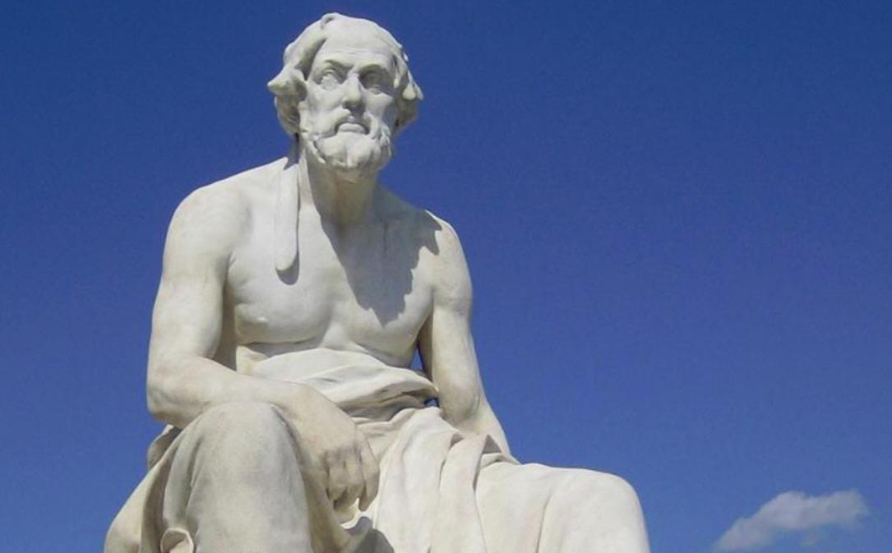

About Us
Who was Thucydides?
Thucydides (c. 460 - 400 BC) was an Athenian historian and general.
Thucydides is often referred to as the "father of scientific history" for the metholodogy found in his most famous work, the History of the Peloponnesian War. According to his own account, he was born in Athens to a family with blood and business ties to Thrace. Due to this connection, Thucydides was sent as a general to Macedonia—a region close to Thrace—in 424 BC, where he would defend the city of Amphipolis from the Spartans.
The city eventually fell, and for his failure he was exiled from Athens. He used his exile as an opportunity to travel around the Spartan-aligned states, giving him the chance to record the conflict from both the Athenian and Spartan perspectives.
He pioneered critical elements of historiography, including:
- Strict chronological organization
- Extensive use of primary sources
- Neutrality in accounts
- Disregard of the supernatural in accounts
- Rationalization and historicization of mythology
This is in stark contrast to his contemporaries who often included the supernatural or popular mythology in their work.
Why it matters
Thucydides' philosophy remains vital today as the foundation of strategy, geopolitics, and international relations, and is thus critical to understand for anyone going into similar fields.
Such analysis is doubly important during times of increasing geopolitical complexity and conflict, such as the one we find ourselves in today.
Our Activities
The bulk of meetings consist of historical lectures and discussions hosted by one of our members.
Other activities include quizzes, war games, and occasional lectures by guest speakers.
Team Members
Nick Tselikov
President
Kyle Toshev
Vice President & Director of Technology
Luke Atkinson
Secretary
Nikita Nikshin
Director of Elections
Tin Pak
Administrator